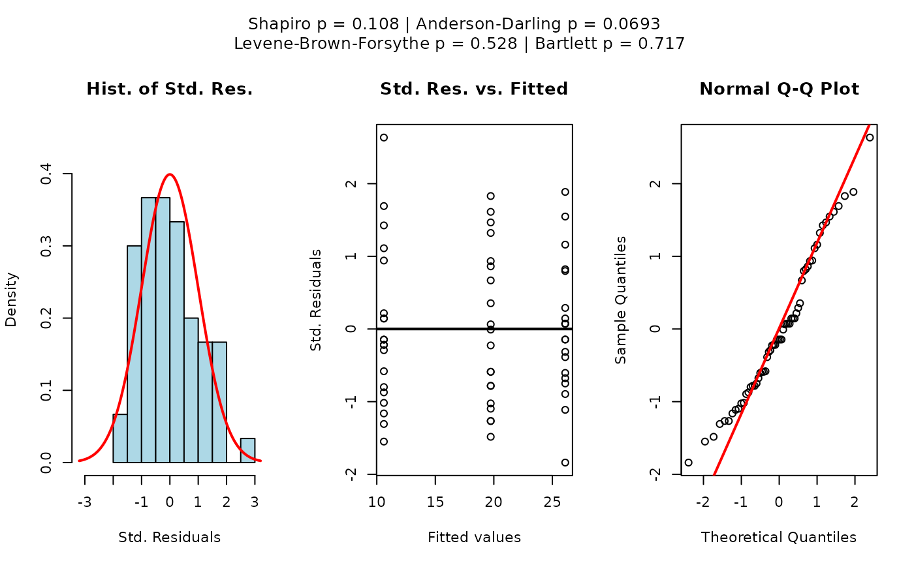
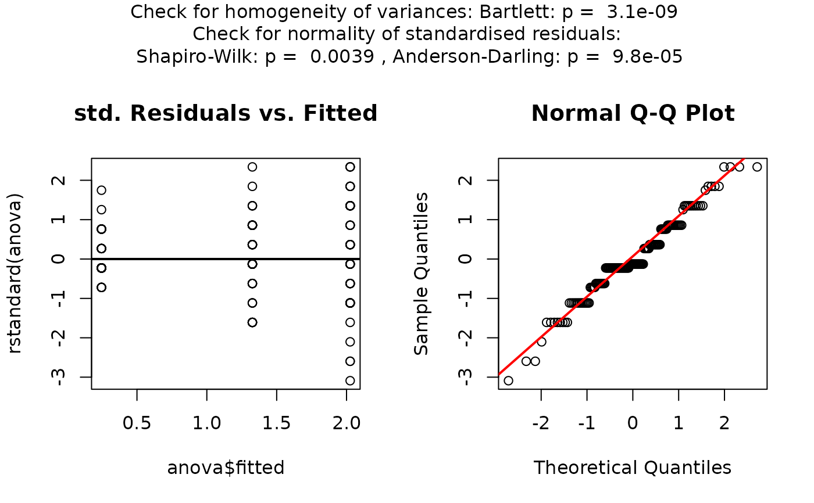

R/vis_anova_assumptions.R
vis_anova_assumptions.Rdvis_anova_assumptions() checks for normality of the standardised residuals of the ANOVA. Both the
Shapiro-Wilk test shapiro.test() and the Anderson-Darling test ad.test() check the
null that the standardized residuals are normally distributed.
It generates a scatter plot
of the standardized residuals versus the fitted mean values of the linear models for each level of fact.
Furthermore a normal QQ plot of the standardized residuals is generated.
The null of homogeneity of variances of each factor level is tested with the bartlett.test().
vis_anova_assumptions( samples, fact, conf.level = 0.95, samplename = "", factorname = "", cex = 1 )
| samples | vector containing dependent variable, datatype numeric |
|---|---|
| fact | vector containing independent variable, datatype factor |
| conf.level | confidence level, 0.95=default |
| samplename | name of sample used in graphical output, dataype character , ""=default |
| factorname | name of sample used in graphical output, dataype character, ""=default |
| cex | number indicating the amount by which plotting text and symbols should be scaled relative to the default. 1=default, 1.5 is 50% larger, 0.5 is 50% smaller, etc. |
list containing the test statistics of the anova, the p values generated by the
Shapiro-Wilk test shapiro.test(), the Anderson-Darling test ad.test() and the bartlett.test().
ToothGrowth$dose=as.factor(ToothGrowth$dose) vis_anova_assumptions(ToothGrowth$len, ToothGrowth$dose)#> $summary_anova #> Df Sum Sq Mean Sq F value Pr(>F) #> fact 2 2426 1213 67.42 9.53e-16 *** #> Residuals 57 1026 18 #> --- #> Signif. codes: 0 ‘***’ 0.001 ‘**’ 0.01 ‘*’ 0.05 ‘.’ 0.1 ‘ ’ 1 #> #> $shapiro_test #> #> Shapiro-Wilk normality test #> #> data: rstandard(anova) #> W = 0.96731, p-value = 0.1076 #> #> #> $ad_test #> #> Anderson-Darling normality test #> #> data: rstandard(anova) #> A = 0.68679, p-value = 0.06928 #> #> #> $bartlett_test #> #> Bartlett test of homogeneity of variances #> #> data: samples by fact #> Bartlett's K-squared = 0.66547, df = 2, p-value = 0.717 #> #>vis_anova_assumptions(ToothGrowth$len, ToothGrowth$supp)#> $summary_anova #> Df Sum Sq Mean Sq F value Pr(>F) #> fact 1 205 205.35 3.668 0.0604 . #> Residuals 58 3247 55.98 #> --- #> Signif. codes: 0 ‘***’ 0.001 ‘**’ 0.01 ‘*’ 0.05 ‘.’ 0.1 ‘ ’ 1 #> #> $shapiro_test #> #> Shapiro-Wilk normality test #> #> data: rstandard(anova) #> W = 0.96949, p-value = 0.1378 #> #> #> $ad_test #> #> Anderson-Darling normality test #> #> data: rstandard(anova) #> A = 0.51449, p-value = 0.185 #> #> #> $bartlett_test #> #> Bartlett test of homogeneity of variances #> #> data: samples by fact #> Bartlett's K-squared = 1.4217, df = 1, p-value = 0.2331 #> #>vis_anova_assumptions(iris$Petal.Width,iris$Species)#> $summary_anova #> Df Sum Sq Mean Sq F value Pr(>F) #> fact 2 80.41 40.21 960 <2e-16 *** #> Residuals 147 6.16 0.04 #> --- #> Signif. codes: 0 ‘***’ 0.001 ‘**’ 0.01 ‘*’ 0.05 ‘.’ 0.1 ‘ ’ 1 #> #> $shapiro_test #> #> Shapiro-Wilk normality test #> #> data: rstandard(anova) #> W = 0.97217, p-value = 0.003866 #> #> #> $ad_test #> #> Anderson-Darling normality test #> #> data: rstandard(anova) #> A = 1.8447, p-value = 9.831e-05 #> #> #> $bartlett_test #> #> Bartlett test of homogeneity of variances #> #> data: samples by fact #> Bartlett's K-squared = 39.213, df = 2, p-value = 3.055e-09 #> #>